#9811 Elmer Gantry - Gott ist im Geschäft
Alternativ: Elmer Gantry
Auszeichnungen: 3 Oscars gewonnen für 2 Oscars nominiert 1 GoldenGlobes gewonnen
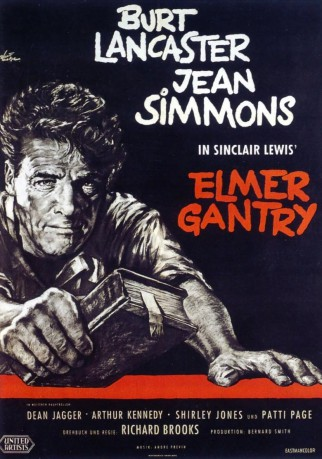 
 IMDB-Wertung: 7.8 / 10
IMDB-Wertung: 7.8 / 10  Metascore: 0
Metascore: 0 
Staubsaugervertreter Elmer Gantry ist in seinem Beruf ein Versager. Groß ist er nur im Vertilgen von Alkohol und Besuchen von Bordellen. Dort entdeckt er auch sein rhetorisches Talent: Gantry riskiert gern mal eine dicke Lippe und beschließt, daraus Kapital zu schlagen. So beginnt er als Wanderprediger in der Zeltmission von Sharon Falconer und zieht dort bald die Massen in seinen Bann. Gantry wird ein Star der Szene - bis ihn seine Vergangenheit einholt.
Jahr: 1960
Dauer: 140 Minuten
FSK: 12
Land: USA Studio: United ArtistsTonspuren: DD2.0 - ,
Untertitel:
Auflösung: 1080p (1920x1080) Größe: 10137 MB
Genre: Drama
Regisseur:  Richard Brooks
Richard Brooks
Drehbuch: Richard Brooks, Sinclair Lewis
Soundtrack: André Previn
Darsteller:
 Burt Lancaster als Elmer Gantry
Burt Lancaster als Elmer Gantry- Jean Simmons als Sister Sharon Falconer
- 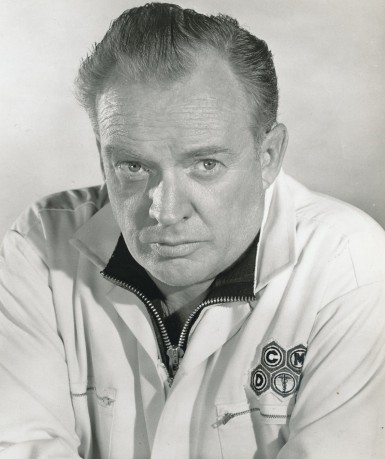 Arthur Kennedy als Jim Lefferts
- 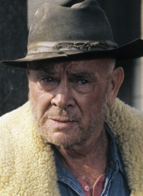 Dean Jagger als William L. Morgan
- Shirley Jones als Lulu Bains
- Patti Page als Sister Rachel
- 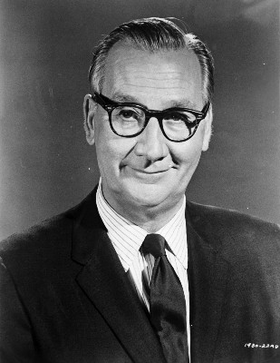 Edward Andrews als George F. Babbitt
 John McIntire als Rev. John Pengilly
John McIntire als Rev. John Pengilly- 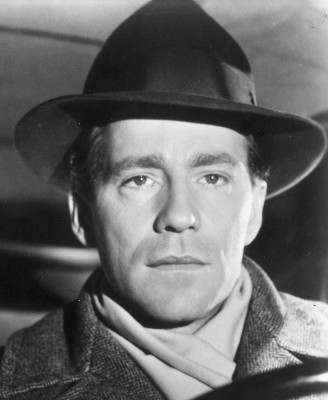 Hugh Marlowe als Rev. Philip Garrison
- Philip Ober als Rev. Planck
- 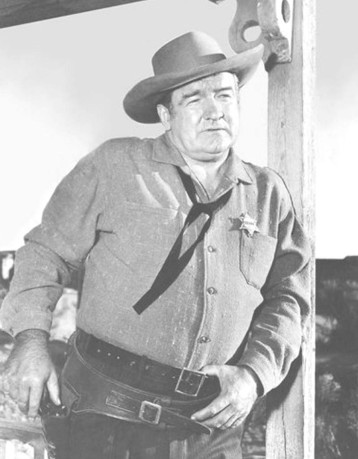 Barry Kelley als Police Capt. Holt
 Larry J. Blake als Mac - Bartender (uncredited)
Larry J. Blake als Mac - Bartender (uncredited)- 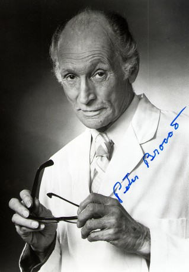 Peter Brocco als Benny - Photographer (uncredited)
- Budd Buster als Valet (uncredited)
- George Cisar als Salesman in Saloon (uncredited)
- 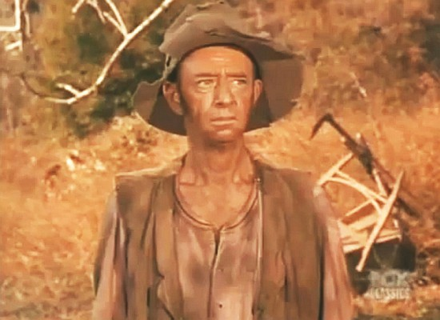 Jimmie Horan als Train Passenger (uncredited)
 Charles Horvath als Hobo in Boxcar (uncredited)
Charles Horvath als Hobo in Boxcar (uncredited)- Rex Ingram als Preacher of Black Congregation (uncredited)
 Colin Kenny als Extra at Revival Meeting (uncredited)
Colin Kenny als Extra at Revival Meeting (uncredited)- 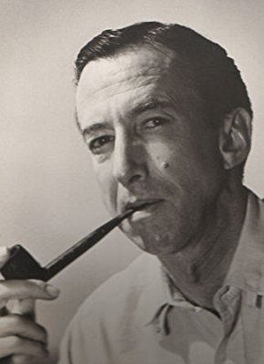 Norman Leavitt als Salesman in Saloon (uncredited)
- BarBara Luna als Prostitute (uncredited)
 David McMahon als (uncredited)
David McMahon als (uncredited) Charles Morton als Man Destroying Revival Tent (uncredited)
Charles Morton als Man Destroying Revival Tent (uncredited)- Ed Nelson als Man on Phone at Sister Sharon Headquarters (uncredited)
 William H. O'Brien als Train Conductor (uncredited)
William H. O'Brien als Train Conductor (uncredited)- Gloria Pall als Girl in Brothel (uncredited)
- Milton Parsons als Revivalist (uncredited)
- 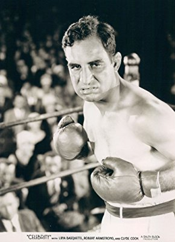 Jack Perry als Man at Revival Meeting (uncredited)
- 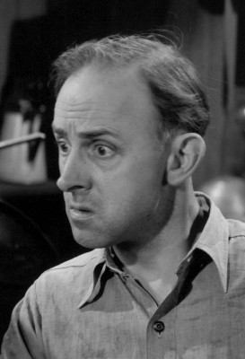 John Qualen als Sam - Storekeeper (uncredited)
- Dan Riss als Radio Announcer (uncredited)
- 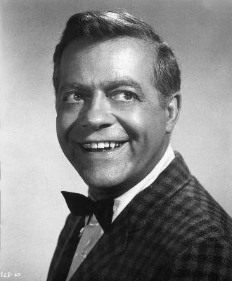 Max Showalter als Deaf Man (uncredited)
- Marjorie Stapp als Lady in Red on Christmas Eve (uncredited)
 Bert Stevens als Choir Member (uncredited)
Bert Stevens als Choir Member (uncredited) Jack Stoney als Revival Tent Roustabout (uncredited)
Jack Stoney als Revival Tent Roustabout (uncredited)- Ken Terrell als Blind Man (uncredited)
- 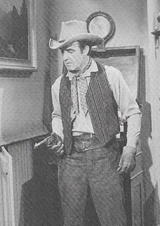 Dale Van Sickel als Salesman in Saloon (uncredited)
- Ray Walker als Salesman in Saloon (uncredited)
- Michael Whalen als Rev. Phillips (uncredited)
- 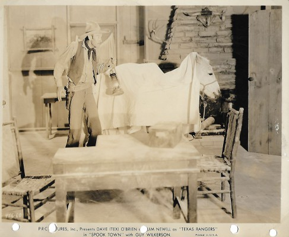 Guy Wilkerson als Janitor in Revival Tent (uncredited)
- Jean Willes als Prostitute (uncredited)
- Joe Maross als Pete
- Wendell Holmes als Rev. Ulrich
- Dayton Lummis als Eddington
- Harry Antrim als Salesman in Saloon (uncredited)
- Ralph Dumke als Salesman in Saloon (uncredited)
- Sally Fraser als Prostitute (uncredited)
- Everett Glass als Rev. Brown (uncredited)
- Sol Gorss als Hobo in Boxcar (uncredited)
- Mary Adams Hayes als Salvation Army Worker (uncredited)
- Mike Lally als Radio Station Official (uncredited)
Datei: X:\1960\Elmer Gantry - Gott ist im Geschäft (1960, FSK12, 1920x1080).mkv seit 29.10.2018
Festplatte: HD 1900-1970
 Es gibt insgesamt 21 Filme in der Gruppe '1960'
Es gibt insgesamt 21 Filme in der Gruppe '1960'